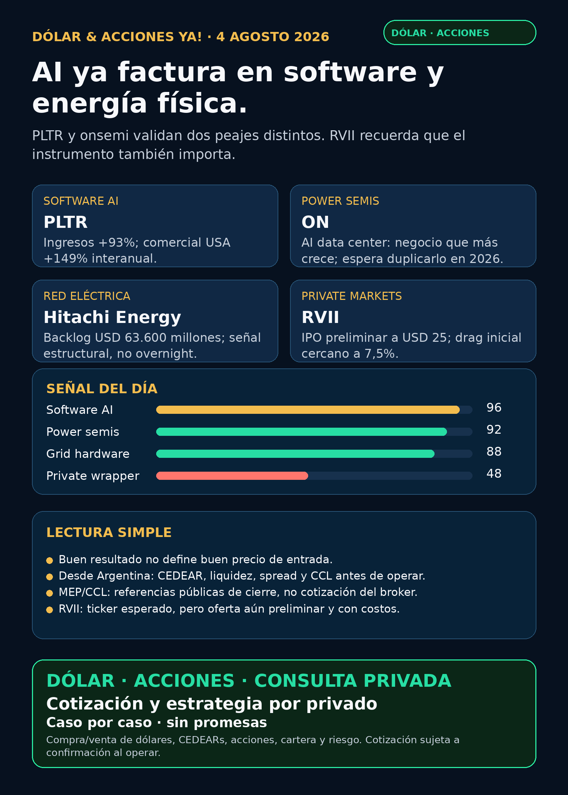

AI ya factura en software y energía física.
Palantir y onsemi validan dos peajes distintos. RVII recuerda que el instrumento también importa.
Texto WhatsApp
Placa del día

Dólar & Acciones YA — Stock Radar — 04/08
Fecha de edición: 2026-08-04. Corte público: 08:46–08:55 ART. Mercado de Estados Unidos todavía no abrió al momento del corte; no se publican precios de acciones ni señales de ejecución. Research educativo para Argentina y carteras globales. No es recomendación personalizada de compra ni de venta.
Lectura simple del día
Hoy la AI deja dos recibos distintos y verificables. Palantir (PLTR) mostró que el software puede convertir la narrativa en ingresos, margen y caja: Q2 revenue de USD 1.935 millones, +93% interanual; su negocio comercial en Estados Unidos creció 149%. onsemi (ON) mostró el otro peaje: la electricidad dentro del data center. Reportó revenue de USD 1.604 millones, +9%, y dijo que AI data center es su negocio de mayor crecimiento y que espera más que duplicar esos ingresos en 2026.
La tercera lección no es una empresa sino el instrumento. Robinhood Ventures Fund II (RVII) presentó un prospecto preliminar para hasta 8 millones de shares a USD 25. Quiere empaquetar private tech en un BDC que espera listar en NYSE, pero entre carga de venta y gastos de oferta el arrastre inicial estimado ronda 7,46%, antes de una comisión de gestión anual de 2% y un incentivo de 20% sobre ganancias de capital realizadas. Una buena historia de startups no elimina costos, iliquidez, descuento a NAV ni riesgo de valuaciones privadas.
Las señales están ordenadas por valor educativo y calidad de evidencia, no como ranking de compra. Buena empresa ≠ buena inversión al precio actual ≠ buen instrumento para Argentina ≠ tamaño correcto dentro de una cartera.
Capa Argentina: dólar, MEP/CCL y CEDEARs
Datos públicos consultados a las 08:46 ART del 04/08:
- CriptoYa: USDT ask ARS 1.588,09 y bid ARS 1.582,43; timestamp 04/08 08:46 ART.
- MEP AL30 24hs: ARS 1.512,73; CCL AL30 24hs: ARS 1.586,80. Ambos muestran timestamp de cierre del 03/08 16:59 ART: son referencias públicas de cierre, no cotizaciones intradiarias del broker.
- BlueLytics: oficial vendedor ARS 1.511,00 y blue vendedor ARS 1.560,00, pero el registro devuelto conserva fecha 31/07. Se publica como último valor informado por esa API, no como precio vivo del 04/08.
En criollo: el MEP permite dolarizar pesos mediante bonos dentro de Argentina. El CCL conecta precios locales con el exterior y suele impactar en los CEDEARs. Un CEDEAR representa una fracción de una acción extranjera, pero tiene ratio, spread —diferencia entre mejor comprador y vendedor—, liquidez, comisiones y CCL implícito. Antes de mover plata hay que revalidar subyacente USD, ratio, book y spread en IOL/PPI u otro broker.
Para las tesis de hoy:
- Accionable internacional/global:
PLTRyONcotizan en Nasdaq. Hitachi cotiza en Tokio (6501.T) y tiene ADR OTC (HTHIY). - Accionable local Argentina: la existencia, ratio, liquidez y spread de CEDEARs para
PLTR,ONy Hitachi no fueron revalidados en pantalla de broker en esta corrida. - RVII: todavía es prospecto preliminar; no debe tratarse como instrumento listo. Acceso Argentina/CEDEAR: no verificado.
Tesis central
La cadena de valor AI se está validando arriba y abajo del rack: software que convierte modelos en decisiones operativas y hardware que convierte electricidad en potencia usable. Palantir dejó crecimiento y márgenes extraordinarios; onsemi dejó demanda en power semiconductors, GaN, SiC y controladores; Hitachi Energy mantiene un backlog estructural de USD 63.600 millones en el carril de red y transformadores.
El moat —ventaja difícil de copiar— cambia según la capa. En software importa la integración con operaciones, datos, switching costs y capacidad de cobrar. En energía física importan diseño, certificaciones, capacidad fabril, supply chain, installed base, servicio y lead times. El riesgo común es pagar cualquier precio por una historia verdadera: un gran resultado no define por sí solo una buena entrada.
Señales educativas del día
1. Software AI monetizado — Palantir (PLTR)
- Qué pasó: Q2 2026 revenue de USD 1.935 millones, +93% interanual. Revenue comercial en Estados Unidos: USD 764 millones, +149%. Revenue gobierno USA: USD 809 millones, +90%. Cerró 220 deals de al menos USD 1 millón.
- Calidad de ganancia: GAAP operating income de USD 912 millones —margen 47%— y adjusted free cash flow de USD 1.220 millones. La compañía elevó guidance FY2026 a USD 8.150–8.158 millones de revenue.
- Fuente primaria (03/08): SEC EX-99.1: https://www.sec.gov/Archives/edgar/data/1321655/000132165526000039/a2026q2ex991pressrelease.htm
- Lectura en criollo: hay monetización real de AI, no sólo demos. El software está entrando en procesos comerciales y gubernamentales con contratos grandes.
- Riesgo: valuación/precio, concentración, ciclo de ventas, stock-based compensation y calidad del backlog. Palantir aclara que TCV/RDV presume opciones y que muchos contratos pueden terminarse por conveniencia; contrato potencial no equivale a revenue garantizado.
- Estado: señal fortalecida / candidato para análisis humano, no orden de compra.
2. Power semiconductors — onsemi (ON)
- Qué pasó: Q2 revenue de USD 1.604 millones, +9%; free cash flow de USD 425,4 millones y margen FCF cercano a 27%. Para Q3 guía revenue de USD 1.650–1.750 millones.
- Señal AI: la compañía dijo que AI data center es su negocio de mayor crecimiento y que espera más que duplicar esos ingresos en 2026. También informó expansión en NVIDIA MGX, wins de power con Great Wall y lanzamiento de GaNEXUS para data centers, robótica e industria.
- Fuente primaria (03/08): SEC EX-99.1: https://www.sec.gov/Archives/edgar/data/1097864/000114036126030989/ef20079200_ex99-1.htm
- Lectura en criollo: un data center no consume electricidad “cruda”; necesita convertirla, controlarla y distribuirla con semiconductores de potencia. Ese contenido crece con la densidad del rack.
- Riesgo: AI data center es el negocio que más crece, pero eso no prueba que ya sea el segmento más grande. También pesan automotriz/industrial, ciclo de semis, inventarios, China, capex e integración de Synaptics.
- Estado: nueva señal fuerte fuera de la watchlist base / en radar.
3. Transformadores y red — Hitachi Energy / Hitachi (6501.T, HTHIY)
- Qué pasó: la presentación Q1 FY2026 de Hitachi Energy mostró revenue de USD 5.400 millones (+12%), orders de USD 10.020 millones (+48%), adjusted EBITA de USD 800 millones —margen 14,8%— y order backlog de USD 63.600 millones (+10%).
- Fecha/fuente primaria: resultados publicados el 29/07; presentación oficial: https://www.hitachi.com/content/dam/hitachi/global/en/press/files/2026/07/260729/2026_1Qpre.pdf
- Lectura en criollo: el “segundo peaje de AI” no es sólo generación; también son transformadores, HVDC, subestaciones, switchgear y servicio de red. Esto es confirmación estructural, no noticia overnight del 03/08.
- Riesgo: ejecución del backlog, capacidad, commodities, tipo de cambio, ciclos largos y acceso instrumental. El ADR es OTC y no equivale a liquidez NYSE/Nasdaq.
- Estado: tesis estructural fortalecida / radar global.
4. Private tech empaquetada — Robinhood Ventures Fund II (RVII)
- Qué pasó: pre-effective amendment N-2 con prospecto preliminar para hasta 8.000.000 shares a USD 25, total base de USD 200 millones. La compañía ofrecería 7,6 millones y un selling shareholder 400.000; espera listar en NYSE bajo
RVII, sujeto a aviso oficial de emisión. - Costo inicial: sales load 4,50% más gastos estimados de oferta de 2,96%: 7,46% combinado. NAV de referencia al 31/07: USD 23,35 por share antes del split final. La gestión cobra 2% anual sobre net assets y 20% de incentivo sobre ganancias de capital realizadas.
- Fuente primaria (03/08): SEC N-2/A: https://www.sec.gov/Archives/edgar/data/2131040/000162828026051516/ck0002131040-20260803.htm
- Lectura en criollo: no se compra “Y Combinator” directamente; se compra un fondo con manager, fees, valuaciones privadas, liquidez bursátil futura y posible descuento/premium frente a NAV.
- Riesgo: oferta todavía preliminar/no efectiva, portfolio joven, adviser sin historial en BDCs, valuaciones Level 3, iliquidez, leverage posible, conflicto de interés, fees y descuento a NAV.
- Estado: radar educativo / no accionable por ahora.
Watchlist priorizada de hoy
Ordenada por valor educativo y evidencia, no como ranking de compra.
- PLTR: señal primaria más fuerte del día por revenue, margen, caja y guidance. Vigilar valuación, stock compensation y conversión real de contratos.
- SNDK: discovery fresco de un comunicado sindicado por Business Wire sobre Sandisk + SK hynix y la primera especificación técnica OCP para High Bandwidth Flash. La fuente final del issuer no se abrió de forma independiente en esta corrida: auditar primaria antes de elevar.
- RVI: el collector local descubrió un Form 4 con ventas chicas del sponsor, pero el re-fetch final del documento/index devolvió 404. Por la regla SEC vigente queda pendiente/auditoría y no se eleva la cifra. Sin NAV, premium/descuento y holdings frescos no se trata como oportunidad.
- RKLB: mantiene la señal verificada del contrato Space Force de USD 266 millones del 31/07. No apareció una primaria overnight superior; vigilar ejecución, financiación, margen y calendario.
- NVDA, TSM, MU, GOOGL/GOOG, AAPL, HOOD, TSLA y ASML: revisados; sin señal nueva primaria más fuerte al corte. Se descartaron previews, upgrades y rumores como sustituto de filings.
- CBRS y AVGO: revisados; sin filing material overnight superior para elevar hoy.
- Gold /
GLD/GOLD/B: la identidad sigue ambigua. Metal, ETF y tickers no son equivalentes.Btampoco es Broadcom; Broadcom esAVGO. Sin instrumento exacto no se publica precio ni accionabilidad.
Energía, grid y power hardware
Semiconductores, transformadores y equipamiento
- onsemi (
ON) es la señal fresca central: power semiconductors para el árbol eléctrico del data center. - Hitachi Energy/Hitachi (
6501.T/HTHIY) aporta backlog y rentabilidad estructural en grid/transformadores. - Eaton (
ETN), Quanta (PWR), GE Vernova (GEV), Modine (MOD) y el JV PWR/Hyosung HICO mantienen señales previas verificadas de breakers, subestaciones, generación y cooling; no se las presenta como novedades del 04/08. - Siemens Energy (
ENR.DE) —no confundir con Siemens AG—, HD Hyundai Electric (267260.KS) y Hyosung Heavy (298040.KS) siguen como radar global. Corea/OTC exige verificación de exchange, liquidez, moneda, fiscalidad y broker. - Virginia Transformer y Delta Star siguen privadas: relevantes para entender el cuello de botella, no accionables directas.
Energía Argentina
- Vista (
VIST) reportó otra recompra de 50.000 shares en un 6-K del 03/08. Es una señal financiera menor, no un catalyst operativo. Fuente SEC: https://www.sec.gov/Archives/edgar/data/1762506/000119312526328314/d898312d6k.htm - Pampa Energía (
PAMPlocal /PAMADR): sigue vigente la escala de Rincón de Aranda/RIGI; falta medir producción, capex, caja y ejecución real. - YPF, TGS/TGSU2 y CEPU: revisados, sin señal primaria nueva fuerte al corte.
- En Argentina, una tesis correcta puede ejecutarse mal si se ignoran precio, volumen, CCL implícito, spread, ratio y comisiones.
Pharma / salud
- LLY / GLP-1: apareció una entrada de expanded access en ClinicalTrials.gov para
LY3437943; un programa de acceso ampliado no es aprobación, Phase 3 positiva ni catalyst de revenue. No se eleva como titular. Fuente oficial: https://clinicaltrials.gov/study/NCT07629401 - REPL: sigue vigente el voto asesor FDA 10-3 favorable a que la eficacia de RP1 + nivolumab sea evaluable y clínicamente significativa; sigue sin ser aprobación.
- PFE, NVO, AZN, MRK y big pharma/oncología: revisados; sin nueva primaria overnight superior al corte. Titulares reciclados de “FDA approved” quedaron fuera.
- Estado del carril: revisado, sin señal nueva fuerte suficiente para desplazar PLTR/ON/RVII.
Defensa / guerra física / aeroespacial
- AVAV, GE Aerospace (
GE), RTX, LMT, NOC, GD, HWM, KTOS, BA e ITA/XAR: revisados. - Discovery secundario reportó un posible award de hasta USD 500 millones para CACI en counter-drone/AI. Sin fuente primaria DoD/CACI abierta, queda auditar primaria / no headline.
- Siguen vigentes las señales verificadas del 31/07:
RKLBUSD 266 millones con U.S. Space Force yRTXcasi USD 1.300 millones para sustainment F135, esta última todavía con caveat de contrato undefinitized. - Estado: revisado; sin señal primaria overnight más fuerte que los contratos ya indexados.
Space / private wrappers / autonomía / agentes / crypto
- Space/orbital AI: SpaceX/
SPCX, Starlink, Starship,RKLB, sat-to-mobile y orbital compute revisados. Titulares tipo “SpaceX earnings preview” no sustituyen un filing/evento primario y no se elevan. - Autonomous mobility / physical AI: Tesla, Waymo/Alphabet, Uber, Zoox/Amazon, Joby y partners revisados. No apareció una primaria nueva fuerte al corte.
- Private markets:
RVIIes el evento educativo central;RVI, DXYZ, ARKVX, AGIX, XOVR, VCX y Forge no deben publicarse sin holdings, NAV, premium/descuento, liquidez, fees y acceso real. - Fintech / AI trading agents:
HOODrevisado. Papers o demos de agentes no son promesa de rentabilidad: requieren datos correctos, paper/read-only, ledger, límites de riesgo y aprobación humana. - Crypto gobernado: revisado sin input on-chain nuevo fuerte. Carril separado de educación, infraestructura y proxies regulados; no token trade.
Red flags / hype para ignorar
- “PLTR +93% = comprar a cualquier precio”: falso. Negocio y precio son preguntas distintas.
- “TCV/RDV = revenue garantizado”: falso. Hay opciones y cláusulas de terminación.
- “ON dice AI = todo su revenue ya viene de data centers”: falso. Es el negocio de mayor crecimiento, no necesariamente el más grande.
- “Backlog Hitachi = caja inmediata”: falso. Faltan ejecución, calendario, capex y margen.
- “RVII a USD 25 = NAV de USD 25”: falso. El prospecto muestra NAV de referencia de USD 23,35 y costos iniciales que reducen NAV.
- “Ticker esperado = oferta efectiva”: falso.
RVIIsigue preliminar al corte. - “Expanded access = FDA aprobó”: falso.
- “Un titular secundario de defensa = contrato cerrado”: falso hasta primaria DoD/issuer.
- “Gold / GLD / GOLD / B son lo mismo”: falso.
Qué mirar después
PLTR: reacción de precio/valuación, stock compensation, calidad de TCV/RDV y conversión a revenue.ON: tamaño real del negocio AI data center, mix, margen, design wins, Q3 y ciclo auto/industrial.- Hitachi Energy: capacidad, conversión del backlog, márgenes y lead times de transformadores/HVDC.
RVII: EFFECT, prospecto final/424B4, split definitivo, NAV, holdings, shares, listing y liquidez.SNDK: abrir la primaria final del estándar HBF/OCP y separar especificación de adopción comercial/revenue.- Defensa: primaria DoD/CACI para el posible award counter-UAS.
- Argentina: MEP/CCL intradiario, CEDEAR disponible, ratio, book, spread y comisiones antes de cualquier decisión.
Portfolio/base Mi Simulación
La cartera de Ricardo fue liquidada, devuelta y terminada según estado vigente del 24/06. No hay posiciones activas ni P&L real que reportar. Stock Radar queda como vigilancia para una próxima compra o un nuevo inversor.
Recibo visible de cobertura
Revisado: watchlist base; AI infra/semis; energéticas argentinas; transformadores, breakers y power hardware; cooling; pharma/GLP-1/oncología; defensa/aeroespacial; space/private wrappers; autonomía/physical AI; fintech/AI agents; crypto gobernado y mercado amplio. Los carriles sin señal primaria nueva fuerte quedaron marcados, no omitidos.
Servicio privado
Dólar · Acciones · Consulta privada. Si querés comprar o vender dólares, entender CEDEARs, armar una cartera o revisar riesgo, se ve por privado caso por caso. Cotización sujeta a confirmación al momento de operar.
Disclaimer
Esto es research educativo para decisión humana. No es asesoramiento financiero personalizado ni instrucción de compra/venta.